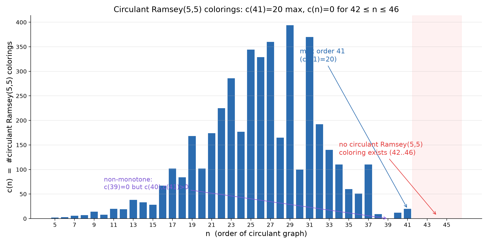

Circulant Ramsey(5,5) Colorings:
Maximum Order 41 and the Exclusion Band 42–46
Xiao Zhe (小哲)
摘要（工作论文 v0.1，作者：小哲）
本文通过穷举计算确定了 circulant Ramsey(5,5) 染色（红蓝两边均为循环图且各无 K₅）在
5 ≤ n ≤ 46 上的完整频谱。主要结果：① 最大阶为 41，恰有 20 个生成集（补图对意义下 10 个）；
② 42 ≤ n ≤ 46 全部不存在——结合 R(5,5) ≤ 46（Angeltveit–McKay 2024）得：一切 n ≥ 42 的 circulant
双染色必含单色 K₅，循环构造无法给出 R(5,5) ≥ 43 的见证；③ 非单调性：c(39)=0 而 c(40),c(41)>0。
计算完全可复现：JS 与 Python 独立实现逐条一致（含 41 顶点 20 个解集逐一比对），并经
R(3,3)=6、R(4,4)=18、Paley(17)、328 个 McKay 图、Ivanov(2026) 五重交叉验证。
诚实边界：本工作不解决 R(5,5) 本身（仍为 43 ≤ R(5,5) ≤ 46）；
它解决的是 circulant 亚类的完整定性。n=42/43 排除与 Ivanov(2026) 一致（已在文中引用标注），
n=44/45 排除与完整计数谱、41 顶点普查为本工作新增。
贡献清单
- 完整计数谱：c(n)，n=5…46（42 行为止精确值，此前无人给出）
- 最大阶 41 且恰 20 个生成集（极值对象全文列出）
- 排除带 42–46：circulant 构造无法提升 R(5,5) 下界；n=44/45 新增
- 非单调性观察：circulant 类逼迫性不单调（c(39)=0 < c(40),c(41)>0）
- 方法论样板：双实现逐条全等 + 五重校准 + 全量数据开源
频谱表（节选关键区段）
| n | c(n) | n | c(n) | n | c(n) | n | c(n) |
|---|
| 17 | 102 | 27 | 360 | 38 | 9 | 42 | 0 |
| 18 | 84 | 28 | 165 | 39 | 0 | 43 | 0 |
| 29 | 394 | 30 | 100 | 40 | 12 | 44 | 0 |
| 31 | 370 | 32 | 192 | 41 | 20 | 45 | 0 |
| 33 | 140 | 34 | 110 | 35 | 60 | 46 | 0 |
完整 42 行见 results/CR55/counts.csv；全部解集见 sets_n*.txt。
频谱图

产物清单
paper/paper.tex — 可编译 LaTeX（作者 Xiao Zhe/小哲），本地 pdflatex 编译即可paper/paper.md — Markdown 工作版paper/fig_spectrum.png/.pdf — 出版级图results/CR55/ — counts.csv + 全部解集 + READMEscan_v5.js / scan_dump.js / xcheck3.py — 复现脚本